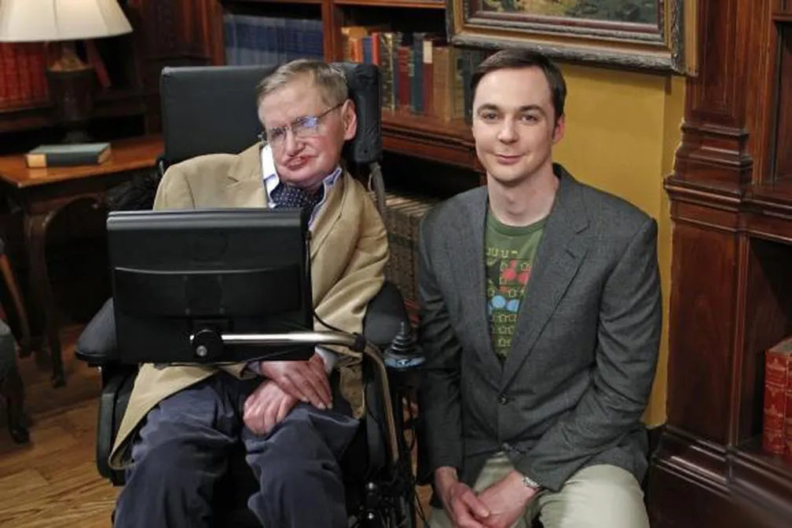
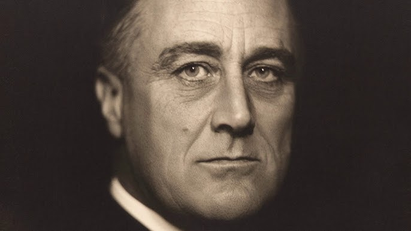
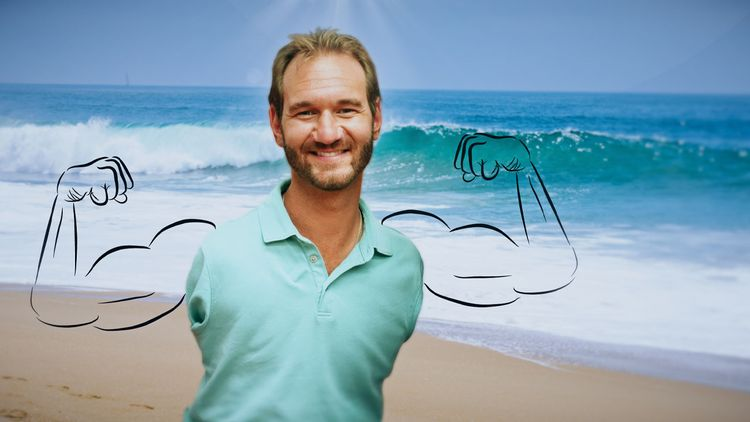

Dia Internacional da Pessoa com Deficiência
(Dia 3 de dezembro)
Personalidades importantes nesse cenário
Stephen Hawking (1942–2018)

Helen Keller (1880–1968)
Ludwig van Beethoven (1770–1827)
Franklin Delano Roosevelt (1882–1945)

Nick Vujicic (1982–)
